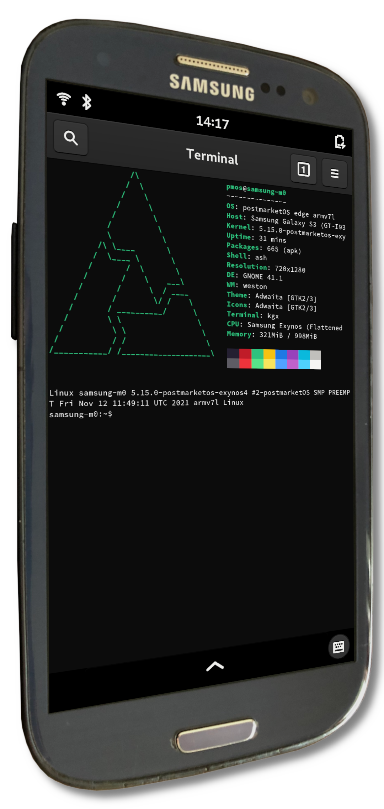

Samsung Galaxy S III (samsung-m0)
|
 Samsung Galaxy S III | |
| Manufacturer | Samsung |
|---|---|
| Name | Galaxy S III |
| Codename | samsung-m0 |
| Released | 2012 |
| Category | community |
| Original software | Android |
| Original version | 4.1.1 |
| Hardware | |
| Chipset | Samsung Exynos 4412 Quad |
| CPU | Quad-core 1.4 GHz Cortex-A9 |
| GPU | Mali 400 MP4 |
| Display | 720x1280 Super AMOLED |
| Storage | 16 GB/32 GB |
| Memory | 1 GB (GT-i9300 & SHW-M440S) |
| Architecture | armv7 |
| Type | handset |
{kind=link}
| USB Networking |
Partial
|
|---|---|
| Flashing |
Works
|
| Touchscreen |
Works
|
| Display |
Works
|
| WiFi |
Works
|
| FDE |
Works
|
| Mainline |
Works
|
| Battery |
Works
|
| 3D Acceleration |
Works
|
| Audio |
Partial
|
| Bluetooth |
Partial
|
| Camera | |
| GPS |
Broken
|
| Mobile data |
Broken
|
| SMS |
Broken
|
| Calls |
Broken
|
| USB OTG | |
| NFC | |
| Accelerometer |
Broken
|
|---|---|
| Magnetometer | |
| Ambient Light | |
| Proximity | |
| Hall Effect | |
| Barometer | |
| Power Sensor | |
| Camera Flash | |
|---|---|
| Keyboard | |
| Touchpad | |
| USB-A | |
| HDMI/DP |
Partial
|
| Ir TX | |
| Ir RX | |
| Stylus | |
| Haptics | |
| Ethernet | |
| FOSS bootloader | |
| Primary Bootloader |
Works
|
|---|---|
| Secondary Bootloader | |
| Mainline |
Broken
|
| Internal Storage | |
| SD card | |
| USB Host | |
| USB Peripheral | |
| Display | |
| Keyboard |
Unavailable
|
| Buttons | |
Contents
| This device has recently been upgraded to the community category.
you can download a pre-built image from the download page and follow instructions there : Use Postmarket Community pre-built image on Samsung devices page. |
Contributors
- Thiagaopluplus
- tyxieblub
- Newbyte
- Grimler
Maintainer(s)
Basic info
So far, what works for Samsung Galaxy S III LTE (samsung-m3) also works for the samsung-m0 (Galaxy S III international GSM version without LTE, Also known as Galaxy S III 3G SHW-M440S in South Korea) and samsung-shv-e210s (a Korean variant). (None of these S III models should be confused with the North American S III models, which require OS builds.)
Code name is MIDAS. Search for midas-mainline to find more info.
Users owning this device
- Arthurlutz (Notes: /e/ 0.11 (android 7 pie) (FIXME: m0 or m3))
- Bastindo (Notes: 2x black, 2x blue)
- ByteXD23! (Notes: Has battery, Not responsive, perhaps dead EMMC?)
- ByteXD23! (Notes: No battery, Not responsive, perhaps dead EMMC?)
- Cick0
- DALEK 77
- Demodé
- Dolphinana (Notes: pmOS with non-free wifi firmware)
- Eloy
- EnderNightLord (Notes: 1 GB RAM)
- ExtensionDriver (Notes: m0, white, worn battery cover)
- GeraltvonNVIDIA (Notes: Running phosh (community))
- Grimler (Notes: Dead eMMC? Went all black and unresponsive suddenly when flashing boot.img)
- Illen (Notes: Battery is broken, works on charger. Runs mainline U-Boot/Linux.)
- Neilvandyke
- Nergzd723 (Notes: Power button broken, otherwise in perfect condition :D)
- Newbyte
- Nieldv
- Prowindows62 (Notes: Dualboot with postmarketOS and stock Android 4.3)
- Roboe (Notes: (borrowed) GT-I9300 16GB; unreliable USB; running postmarketOS edge)
- Roboe (Notes: (borrowed) GT-I9300_TIZEN (Tizen RD-PQ); HW rev. 0xC (M0_REAL_REV1.1_2nd_120413); PIT Version 08; running Tizen 2.2.0 with U-Boot 2011.03 (Jul 16 2013))
- Russanandres (Notes: Dualboot Android + PMOS)
- Sputnik1973 (Notes: Broken screen and bad battery.)
- Sputnik1973 (Notes: Mint condition, no issues (with the original dock that came with it.))
- Thenightterrorx (Notes: haven't tried flashing yet)
- Thiagaoplusplus
- TPJS (Notes: dont know, where it is currently; running Lineage-OS)
- TryzenAlpensky (Notes: fried display)
- UltrasonicMadness (Notes: GT-I9300)
- Ungeskriptet (Notes: 2x White and 1x Pebble Blue, all GT-i9300. One with U-Boot :D)
- Vincele (Notes: PMOS edge, problem see (2))
- Vipaol
How to enter flash mode
- Hold power + Home + volume down
- When prompted, release all buttons and press volume up
Installation
Step 1: Flash the system to an SD card
| Note: You can technically flash postmarketOS to your internal storage instead of an SD card, but there's no easy way to do this on samsung-m0 at the moment |
Start by flashing a pre-built postmarketOS rootfs image onto an SD card, as described in the installation article.
Step 2: Enter ODIN mode
To enter ODIN mode, follow these steps:
1. Turn off phone 3. Hold Volume Down + Home + Power until you get Warning!! screen 2. Connect USB cable 4. Push Volume up to continue to ODIN mode screen
Step 3: Flash the kernel via ODIN mode
Now, use Heimdall to flash the image with -boot at the end to your boot partition. Make sure that you extract it before flashing it (the downloaded file is a compressed .tar.xz archive).
Flash it with this command:
heimdall flash --BOOT <Decompressed image filename> --verbose
Note that it's important to write BOOT in all capitalised letters, as otherwise you will get an error about the partition not being found in the PIT.
After that's done, your device should now automatically reboot into postmarketOS!
WiFi
As of pmaports!2556, WiFi should "just work" (on mainline).
If WiFi networks show up but you can't connect to them, you can try using the nvram for samsung-m3/i9305. This is a hack and not necessarily endorsed, but at least one user has reported that their samsung-m0/i9300 needs this for WiFi to work. We would like to handle this better, but currently we don't have any way of doing this.
To switch to the nvram meant for samsung-m3, run this command:
$ cd /lib/firmware/brcm
$ sudo mv brcmfmac4334-sdio.samsung,i9300.txt brcmfmac4334-sdio.samsung,i9300.txt.bak
$ sudo ln -sf brcmfmac4334-sdio.samsung,i9305.txt brcmfmac4334-sdio.samsung,i9300.txt
If it still refuses to connect, you might want to try replacing the contents of /lib/firmware/bcrm/brcmfmac4334-sdio.samsung,i9300.txt with the nvram from LineageOS. Apparently this is necessary on some British i9300 models.
Related issue: pmaports#1571
Video out
{kind=link}
Video out should work as long as you use an 11pin MHL cable or dock (safest option would be an original Samsung dock/adapter from the time period, Samsung's EDD-S20EWE is known to work).
In 2022-09, all hdmi related nodes were disabled (pmaports!3395) as the kernel driver reports the wrong state, and this led to the Phosh stack not starting up. A WIP to fix issue can be found at gitlab.com/exynos4-mainline/linux/-/tree/m0-mhl-fixes.
Battery
With mainline, battery reporting works as of pmaports!2423, and charging works as of pmaports!2546. Charging allegedly randomly stops, but should that happen you can just unplug and re-plug the cable. Charging is also very slow and the device will probably lose power if you use it while charging.
Battery reporting and charging via postmarketOS does not work on the downstream kernel - the device gets stuck on whatever percentage it was on boot (although it does charge in recovery mode)
Modem
The modem does not work in postmarketOS. That said, there was some work done to enable the modem on the i9300 variant of this device. It can be found here: https://github.com/fourkbomb/linux/tree/modem. Note that even if you apply this, you would likely need userspace patches as well for calls and mobile data to be usable.
Audio
Audio mostly works. Notable omissions are input from the main microphone and headset audio out.
GPS
The Galaxy S III uses Broadcom BCM4751 GPS.
Miscellaneous mainline kernel information
The kernel package for this device in postmarketOS is linux-postmarketos-exynos4PMOS. In pmaports repo, including a list of patches. The most important patch is the "flush TLB" one - it allows the kernel to be booted by devices using the stock Samsung bootloader.
A large part of the mainlining process was done by forkbomb; see Midas on Mainline.
The Replicant project also provides good mainline support for the Galaxy S III; they have expressed intent to collaborate with us. Their support matrix can be found on their wiki. Relevant links:
Upstream DTS: exynos4412-i9305.dts
Alternative bootloaders
- forkbomb got mainline u-boot running on this device and wrote about it in this blog post: https://blog.forkwhiletrue.me/posts/an-almost-fully-libre-galaxy-s3/
- xboot might be a completely free bootloader option. Looks to have zero proprietary blobs.
Modem support
Replicant supports the modem on mainline Linux, and they're working on getting the i9300 modem working with a mainline kernel in a way that pmOS can also utilize: https://redmine.replicant.us/issues/1954 https://git.replicant.us/contrib/GNUtoo/kernel_replicant_linux/log/?h=replicant-11-i9300-modem
The Qualcomm Gobi MDM9615 Modem seems to have mainline kernel support as well: https://redmine.replicant.us/projects/replicant/wiki/GalaxyS3I9305#Hardware-table
LTE modem support with the mainline kernel on Replicant is being done here: https://redmine.replicant.us/issues/2206 The Note II discussed here has the same or very similar modem as the i9305.
Warnings and considerations
Power
It used to be that the battery percentage wasn't properly monitored and would get stuck at a set percentage at boot. While this was the case, the phone would not shut down when battery levels went too low, which could make the phone behave strangely on significantly worn batteries (in the ballpark of 50% wear). There are theories that this may have caused hardware failure for one user, but this is not proven. Battery level reporting has since been fixed, but it has not been extensively tested for reliability, so we recommend that you try to not let your phone's battery percentage fall too low. It should shut down on its own before anything adverse can happen, however.
See pmaports#1115 for more information.
eMMC firmware bugs
Replicant has a good article about this: https://redmine.replicant.us/projects/replicant/wiki/EMMCFirmwareBugs
Heimdall does not consider partition sizes when flashing
See Heimdall#494
See also
- Wikipedia
- Device package
- Kernel package
- Fix long dead Galaxy S3 phone eMMC bug
- Guide to revive a bricked i9300 EMMC
- pmaports!2556 Rename from i9300 to m0
- TWRP with eMMC boot partitions patch, useful for flashing bootloaders